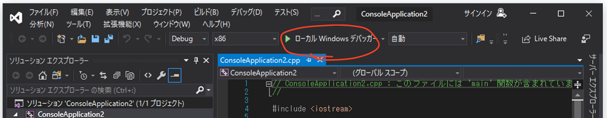
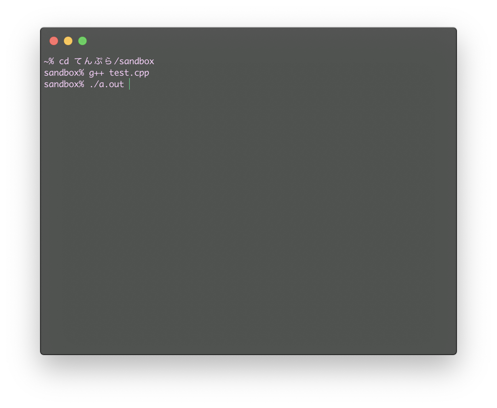

環境構築
何も用意してなかったら、何もできないよ
今回のゴール
- C/C++ について少し触れる
- C/C++ プログラムを書いて実行できる環境を作る
所要時間: 20 ~ 30 分くらい
プログラムと実行形式
私達が普段触れている電子機器――スマホ、パソコン、ゲーム機――などには必ずアプリが関わっている。……いるよね？これ過去の人が読んでないよね？
そいつらはみんな、「機械に何をさせるのか」っていうのを記述したもの で作られている。これを (コンピュータ) プログラム という。
そして、プログラムを書くことを プログラミング、プログラムを書く人を プログラマ っていう。
アプリはすべてプログラムによって作られている。
特に、生産的で一般的な手法として、 プログラミング言語 という独自言語のテキストを書くやり方がある。マウスだけで作るやつとかもあるけど、作ってるうちにテキストで書いたほうが楽なことに気づく。これマジ。
ここでは、そのプログラミング言語の中の一つの、それなりに強い言語 C++ を使ってく。ただ、これはまあまあレベルの高いこともできるけど、最初はこの言語の元になった C 言語と共通する部分しか触らないことにする。
なぜ C++ なのか
- C 言語から派生した C 系言語は非常に多く、学習すると それなりに広い分野で活かせる から。
- 他の言語より、実行速度が速い。なぜなら、プログラムをマシンが実際に動かす符号 (機械語っていうけどこれについては詳しくないので勘弁) へと変換しているから。
- マシンに近いこともできて、逆に高度なこともできて、ゲームも作って、あまり目立たないけど大事なシステムも作って、理論上はなんでもできる から。(悪く言えば器用貧乏)
- 顔がでかくて、首が太くて、足が短くて、ちょっとずんぐりむっくりな感じする。(大嘘)
C++ での作業の流れ
- プログラムを書く。コンパイル (下記) する言語ではよく (ソース) コード と呼ばれる。別に味はしない。拡張子は cpp や cxx。ホントはなんでもいいけど。
- コンパイル する。コンパイラ というアプリを使う。これにファイルを渡すと、プログラムから実行できるアプリを作る。有名なのは GNU C Compiler (
gcc,g++) とか Clang (clang,clang++) とか Microsoft Visual C++ (cl) とか。 - コンパイルされた実行形式 (Windows だと
.exeとか) を動かす。
C++ のインストール
Windows の方
ここから Visual Studio 2019 for Community をインストール してね。
Visual Studio Installer で「C++ デスクトップ開発」を選択してインストールするのを忘れないように！
macOS の方
Mac App Store から Xcode をインストール してね。
インストールできたら一回だけ起動してね。このときに必要なものがインストールされるから。
その他特殊な OS の方
Debian 系なら sudo apt-get install build-essential
CentOS 系なら yum install gcc
それ以外は最初から入ってると思う。全部は網羅できないので勘弁してくださいφ(ﾟДﾟ ) ……って、こういう OS 使ってる人たちは絶対インストール方法知ってるでしょ。
自分が自由に使える PC を持っていない方
Wandbox っていう ウェブコンパイラ がおすすめ。
左上のメニューからコンパイラを切り替えられる。C++ なら gcc と clang と zapcc が使える。ちなみに C++ 以外の言語にも対応している。
実行 (Run) すると、下の黒い画面の上に Share ボタン が出てくる。これを押すとその書いたコードを保存して、そのリンクを取得できる。このリンクの URL は https://wandbox.org/permlink/~ になる。
便利だけど、そのうち自分の PC を持つべき。
※自由に使えるっていうのは、えっちな画像を保存しても問題がない状態のことだよ。
Hello, World!
まずはインストールできているか確かめるよ。
Windows で Visual Studio 2019 を使う人
Visual Studio 2019 を起動して、新しいプロジェクトの作成 > コンソールアプリ で プロジェクト を作成してね。
そしたら出てきた画面のツールバーの 再生マークのボタン (Windows デバッガーとか書いているやつ) を押して実行。

すると 黒いコンソール画面 が出てきて Hello, World! って表示される (はず)。そうなっていなかったり詰まったりしたら Slack とかで質問して。
それ以外の人
以下のプログラムをテキストエディタに コピペして、好きな名前で 保存して ね。拡張子 (ファイルの後ろの .txt とか .exe とかのやつ) を .cpp にしておけば、名前は何でもいいよ。
#include <iostream>
int main() {
std::cout << "Hello World!\n";
}
保存したら、コンパイラにプログラムを渡すよ。
macOS だと アプリケーション > ユーティリティ > ターミナル (もしくは好きなターミナルアプリ)
ほかは各自シェル
を開いてね。
cd フォルダ名 でプログラムがあるフォルダに移動してから、g++ ファイル名 でコンパイルしてね。a.out って名前のファイルができるから、これをそのままタイプして実行！

ッターン！ Hello, World! って表示される (はず)。
何かうまくいかなかったら Slack か口頭で 質問 して。なんかやばいから。
まとめ
ちゃんと準備できた？できた？次章からプログラムを書いていくから、よろしくね！